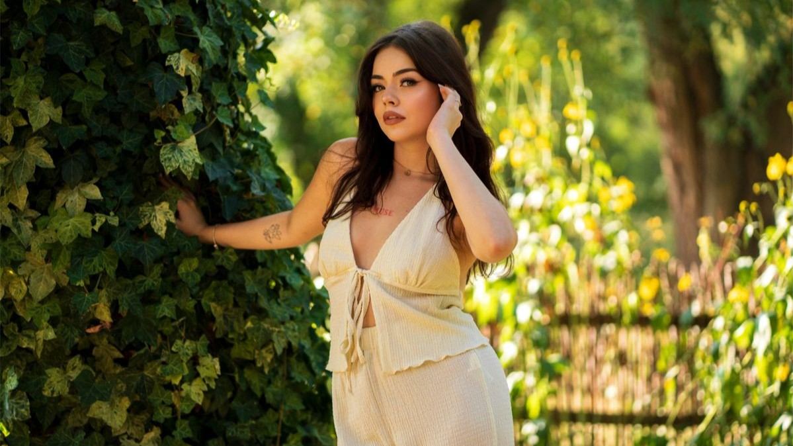

NAJCZĘŚCIEJ ZADAWANE PYTANIA
Czas trwania sesji zależy od wybranego pakietu — zazwyczaj trwa od około godziny do dwóch godzin, w zależności od miejsca oraz rodzaju sesji.
Tak — podczas sesji pokazuję, jak się ustawić, ale przygotowanie zaczyna się już wcześniej. Przed sesją wspólnie ustalamy klimat zdjęć, szukamy inspiracji i wzorujemy się na wybranych przykładach — to zdecydowanie ułatwia pracę i sprawia, że nie musisz się stresować.
Po rezerwacji otrzymasz ode mnie wskazówki dotyczące ubioru, makijażu oraz dodatków. Pomagam dobrać stylizacje tak, aby pasowały do klimatu sesji.
Sesje odbywają się w plenerze lub w studio — w zależności od wybranego pakietu i preferencji klientki.
Przed wpłaceniem zaliczki wysyłam kilka propozycji studiów i razem wybieramy najlepsze. Zazwyczaj mam jedno swoje ulubione studio, jednak wszystko zależy od charakteru sesji i tego, czego potrzebujemy.
Na gotowe zdjęcia czeka się zazwyczaj od 14 do 21 dni. Czas ten może się zmienić — fotografia nie jest moją jedyną pracą, dlatego taki czas oczekiwania. Zawsze informuję, jeśli coś się zmienia.
Tak — oferuję trzy pakiety zdjęć, a po otrzymaniu galerii istnieje możliwość dokupienia dodatkowych ujęć według aktualnego cennika.
Nie wykonuję makijażu samodzielnie, jednak współpracuję z makijażystkami oraz stylistką fryzur, które mogę polecić przed sesją.
Termin sesji możesz zarezerwować poprzez formularz rezerwacji dostępny na stronie lub kontaktując się ze mną bezpośrednio.
Jeśli mi zaufasz, mogę samodzielnie wybrać i obrobić najlepsze zdjęcia z sesji.
Jeśli jednak wolisz dokonać wyboru samodzielnie — nie ma problemu. Wysyłam galerię online z możliwością wyboru zdjęć oraz dokupienia dodatkowych ujęć. Obrabiam dokładnie te zdjęcia, które wybierzesz.
Tak — możesz przyjść z osobą towarzyszącą. Jeśli jednak nie bierze udziału w sesji, proszę o zaczekanie przed wejściem do studia — dla komfortu naszej pracy.